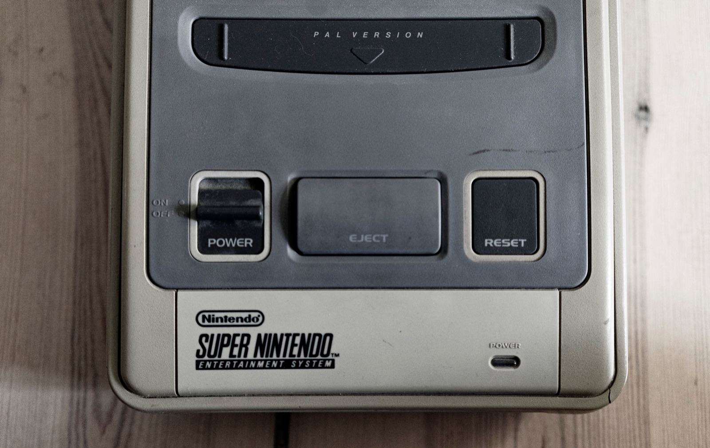
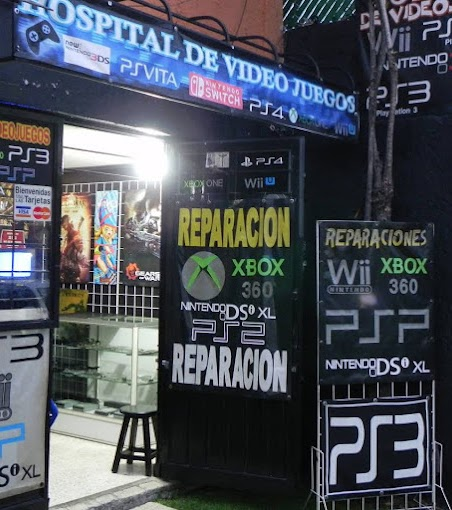

Tu consola,
de vuelta
al juego.
Reparamos consolas y controles en Jardines de Santa Mónica, Tlalnepantla.
PLAYSTATION · XBOX · NINTENDO SWITCH · CONSOLAS CLÁSICAS · RETRO ·
Qué reparamos


Horarios
Horario de hoy
Consulta el horario semanal
El horario puede cambiar en días festivos. Si harás un viaje especial, llámanos antes de venir.
Dónde estamos
Convento de Capuchinas #10 Esquina con Convento de Acolman Col. Jardines de Santa Mónica, Tlalnepantla, Estado de México, 54050